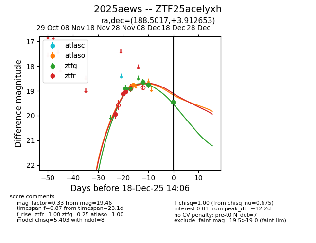
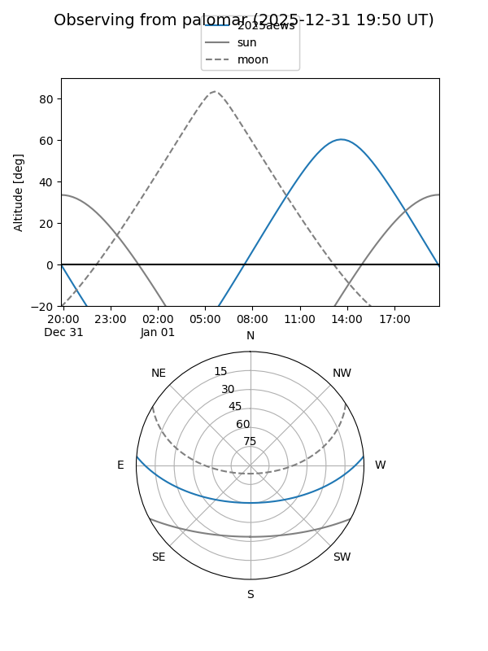
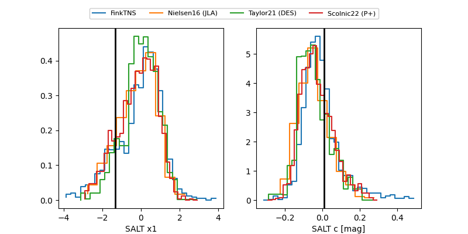

2025aews
Target 2025aews at 2025-12-31 17:59
Aliases and brokers:
FINK: link
Lasair: link
ALeRCE: link
TNS: link
YSE: link
alt names
ZTF25acelyxh (ztf,fink_ztf)
2025aews (tns,yse)
Coordinates:
equatorial (ra, dec) = 188.5017,+3.91265
equatorial (HMS+DMS) = 12:34:00.40,+03:54:45.55
galactic (l, b) = (292.0106,+66.41408)
Flags:
Photometry:
last atlaso=18.76, ztfg=19.78, ztfr=19.05
2 atlaso, 6 ztfg, 3 ztfr detections
Lightcurve

Visibility


Additional plots
